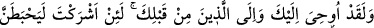
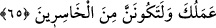
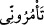
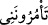

Yâni bütün bu âyetleri gördükten sonra hiç Allah’tan başkasına kulluk eder miyim!? Siz
bana bunu emrediyorsunuz, ey câhiller? demektir.
“Siz bana bunu emrediyorsunuz” ifâdesi, onların bunun akabinde Hz. Peygamber
(s.a.)’e Allah’tan başkasına ibâdet etmesini emrettiklerine ve son derece akılsız
oldukları için “Sen bizim ilâhlarımıza teslimiyet göster, biz de senin ilâhına inanalım!’
dediklerine delâlet eden bir ara cümledir.
“nin aslı “dir. Sonra ref’ alâmeti olan birinci nûn, vikâye için olan ikinci
nûna idğâm edilmiştir. İbn Âmir aslı üzere, Nâfi’ ise ikinci “nûn”un hazfi ile okumuştur.
Çünkü bu “nûn” harfi genellikle hazfedilir.
65. (Rasûlüm!) Şüphesiz sana da senden öncekilere de şöyle vahyolunmuştur ki:
Andolsun (bilfarz) Allah’a ortak koşarsan, işlerin mutlaka boşa gider ve hüsranda
kalanlardan olursun!
“(Rasûlüm!) Şüphesiz sana da senden öncekilere” senden önceki peygamberlere -
Onlara selam olsun- “de şöyle vahyolunmuştur ki: Andolsun” bilfarz “Allah’a ortak
koşarsan,” benim katımda ne kadar değerli olursan ol “işlerin” amellerinin sevâbı
“mutlaka boşa gider ve” amelinin boşa gitmesi sebebiyle kâr etme gayretinde
“hüsranda kalanlardan olursun!”
Herkes dikkate alındığı için burada hitap böyle olmuştur.
Bu söz peygamberleri harekete geçirmek, kâfirlerin ümidini kesmek, Allah’a ortak
koşmanın kötülüğünü ve çirkinliğini, başkaları bir tarafa şirk koşması neredeyse
imkânsız olan kimselere bile yasaklanan bir şey olduğunu haber vermek için faraziye
kabilinden söylenmiş bir sözdür.
Taftâzânî der ki: “Burada muhatap Hz. Peygamber (a.s.)’dır. O’nun şirk koşmadığı
ise kesindir. Bununla birlikte, kendisinden şirk sâdır olan birinin bütün amellerinin boşa
gideceğini ve ziyan etmiş olacağını ihsâs etmek için faraziye kabîlinden sanki meydana
gelmiş gibi gösterilerek mâzî/geçmiş zaman siygası kullanılmıştır.
Keşfü’l-esrâr’da şöyle der: “Burada Hz. Peygamber (a.s.)’a hitap edilmekle birlikte
başkaları kasdedilmiştir.
İbn Abbâs (r.anhümâ) der ki: “Bu, Allah tarafından Nebîsi (a.s.) için bir edeb,
başkaları için ise bir tehdiddir. Çünkü Allah Teâla O’nu şirkten de kâfirlere
dalkavukluk etmekten de korumuştur.”
Kâşifî ise şöyle der: “Doğru olanı şudur: Zâhirde muhatap Peygamberlerdir, hakikatte
ise onların ümmetinin Müslüman ferdleridir. Onlardan her birine şöyle buyurur: Eğer